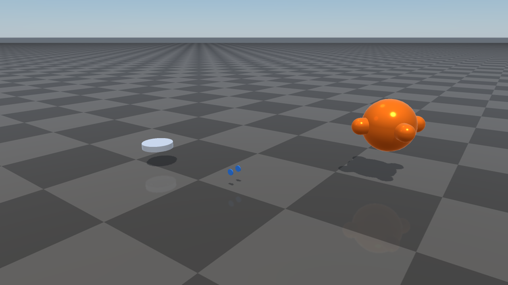
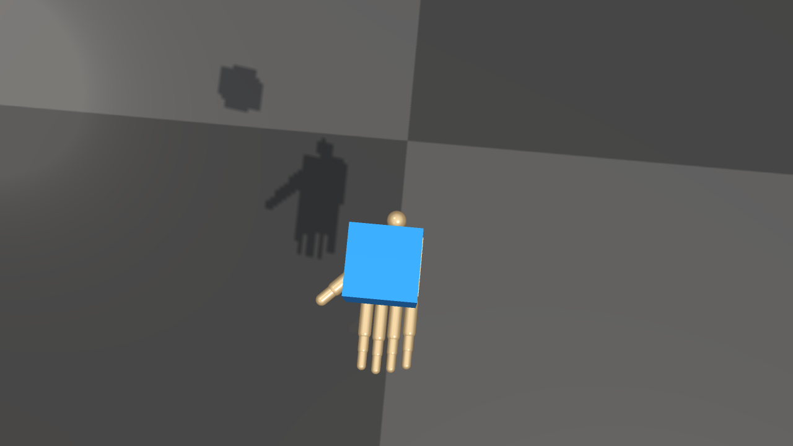

OpenUSD Loading
RaiSim loads OpenUSD files directly through the bundled OpenUSD runtime. OpenUSD support is part of supported RaiSim packages and source builds; it is not an optional Assimp importer path and there is no CMake switch to build RaiSim without it.
{kind=link}

Collision bodies from Isaac Sim robot USD assets imported as RaiSim articulated systems.
Instantiating a World From USD
The default way to instantiate a ``raisim::World`` is to point the
constructor at a USD scene file. The constructor inspects the file’s
extension and, when it is .usd, .usda, .usdc, or .usdz,
dispatches to the USD scene loader to build the world’s bodies, joints, and
collision shapes in a single call:
#include <raisim/World.hpp>
raisim::World world("scene.usd"); // <-- recommended default
// World is now populated with the rigid bodies, articulated systems, and
// collision shapes declared in scene.usd. Add a ground, set the time
// step, attach controllers, and start stepping as usual.
world.addGround();
world.setTimeStep(0.0025);
This unifies physics scene authoring on a single text/binary format that USD tooling — Isaac Sim, Omniverse, Blender’s USD exporter, RaiSim’s own RaiSim Engine 2 editor — can produce and consume. Prefer it over hand-written XML when the scene is going to be authored by a tool or exchanged with other USD-native ecosystems.
The same constructor still accepts a RaiSim .xml world configuration
file or a MuJoCo .mjcf; the file’s extension
(for USD) and root tag (<raisim> / <mujoco>) determine the loader.
USD is the recommended default; XML stays available for hand-edited and
template-driven worlds.
raisim::World usdWorld("scene.usd"); // USD scene loader
raisim::World xmlWorld("scene.xml"); // RaiSim XML loader
raisim::World mjcWorld("scene.mjcf"); // MuJoCo MJCF loader
raisim::World emptyWorld; // empty world, build it
// up programmatically
{kind=link}

World(shadow_hand.usd) imports the ShadowHand physical geometry; the
cube is a native RaiSim rigid body.
What is imported from a USD scene
The USD constructor reads:
UsdPhysicsRigidBodyAPIbodies as rigid objects.PhysicsFixedJoint,PhysicsRevoluteJoint, andPhysicsPrismaticJointrelationships between bodies, assembled into articulated systems.Primitive collision shapes — cube, sphere, capsule, cylinder — and triangle-mesh collision shapes via
UsdGeomMesh.Per-body and per-link transforms.
The constructor does not import PhysX tendons, drives, variants, skeletons, lights, or full material graphs. For high-fidelity rendering materials, pair USD physics import with the Rayrai visual pipeline, or keep a separate render-quality USD/glTF alongside the physics USD.
Loading USD as Mesh Geometry
The mesh loader also accepts .usd, .usda, .usdc, and .usdz
files wherever a RaiSim mesh path is accepted, for individual single-body
mesh objects rather than whole scenes:
raisim::World world;
auto* mesh = world.addMesh("asset.usd",
1.0,
1.0,
"default",
raisim::MeshCollisionMode::ORIGINAL_MESH);
The same OpenUSD-backed path is used by raisim::Mesh::loadMesh and
raisim::Mesh::preprocessMesh. Use preprocessMesh when you want a
deterministic triangulated OBJ cache that can be reused by later runs.
Runtime requirements
Installed packages include the OpenUSD runtime next to RaiSim:
On Linux, the runtime is installed under
raisim/lib/openusdand the package environment script adds the required library path.On Windows, the USD DLLs are installed next to the RaiSim binaries and the plugin resources are under
raisim/bin/openusd.
Keep the bin, lib, openusd, and rsc directories together when
copying an installed package. If you build from source, the bundled prebuilt
OpenUSD tree must exist under prebuilt/openusd/<platform>; CMake fails at
configure time if the required OpenUSD headers or libraries are missing.
Mesh Import Semantics
When USD is loaded as a mesh asset (via addMesh or Mesh::loadMesh),
RaiSim treats it as triangle-mesh geometry:
The loader opens the file as a
UsdStageand traversesUsdGeomMeshprims.Parent transforms are applied to each mesh before vertices are added.
Polygon faces are triangulated, and left-handed USD mesh winding is reversed.
Multiple mesh prims in one USD file are merged into one RaiSim mesh object.
For high-detail render assets, keep a separate simplified collision mesh or
use MeshCollisionMode::CONVEX_HULL / MeshCollisionMode::CONVEXIFY
when appropriate.
Examples
shadow_hand_usd_cube loads
rsc/isaac/Robots/ShadowRobot/ShadowHand/shadow_hand.usd through
World(shadow_hand.usd) and publishes the scene through RaisimServer.
The example target is generated only when CMake finds a RaiSim package with USD
scene loading. RaiSim is expected to include OpenUSD on every supported
architecture. Start the TCP viewer, then run:
<raisim-install>/bin/rayrai_raisim_tcp_viewer
<raisim-install>/bin/shadow_hand_usd_cube
nvidia_usd_robots provides additional vetted Isaac Sim robot scenes:
create3, jetbot, and ant.
<raisim-install>/bin/nvidia_usd_robots
On Windows, use the corresponding .exe binaries.
rayrai can also load USD files as visual-only meshes through
RayraiWindow::addVisualMesh. This is useful for inspection, but the same
scope applies: geometry, transforms, basic display colour/opacity, not full USD
scene semantics.
Troubleshooting
If a USD asset fails to load:
Verify that the asset path exists and that the package
rscdirectory was copied with the binaries.Run the package environment script before launching examples from outside the installed
bindirectory.On Windows, make sure the USD DLLs are beside the executable and
bin/openusdis still present.If source configuration fails, regenerate or restore the matching bundled OpenUSD prebuilt runtime for your platform.